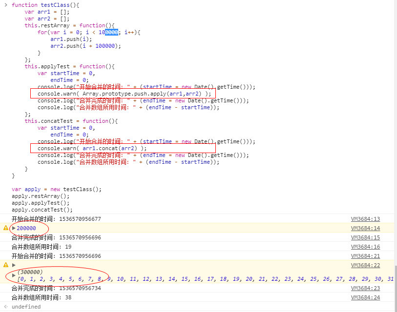

instanceof
- 语法: 对象 instanceof 构造函数
- 判断构造函数的原型是否在该对象的原型链上
Function
- 可当做构造函数,其原型是空函数,其原型的原型是Object.prototype(空对象). 在当前对象中,调用当前对象的其他方法,需要使用this
数组和字符串相关API
数组方法
- slice 截取 原数组不会改变 一个参数索引包左不包右
var arr = [1, 2, 3, 4, 5];
console.log(arr.slice(0)); //[1, 2, 3, 4, 5] ===>arr=[1, 2, 3, 4, 5]
console.log(arr.slice(-1)); //[5]===>arr=[1, 2, 3, 4, 5]
console.log(arr.slice(2)); //[3, 4, 5]===>arr=[1, 2, 3, 4, 5]
console.log(arr.slice(0, 2)); //(索引值,索引值)[1,2]===>arr=[1, 2, 3, 4, 5]
2.splice 删除/替换 原数组会改变 返回删除截取出来的数组,原数组为剩下的内容组成的数组
var arr = [1, 2, 3, 4, 5];
console.log(arr.splice(0)); //(索引位置往后截) [1, 2, 3, 4, 5] ===> arr=[];所以可用来清空数组
console.log(arr.splice(2)); // [3, 4, 5] ===> arr=[1,2];
console.log(arr.splice(0, 3)); //(索引,个数) [1, 2, 3] ===> arr=[4,5];
console.log(arr.splice(0, 2, '9', '8', '7' )); //(索引,个数,替换内容) [1, 2]===> arr=["9", "8", "7", 3, 4, 5];
console.log(arr);
3.push 数组尾部添加, 返回个数
4.pop 数组尾部删除,返回取出的那个数
5.unshift 数组头部添加, 返回个数
6.shift 数组头部删除,返回取出的那个数
7.indexOf 查索引, 未找到返回-1
8.lastIndexOf 从后往前查索引,索引值不会变
9.valueOf 返回原数组
10.toLocaleString 转为字符串
11.toString
12.isArray 判断是否是数组,是的话返回true
13.join 转换成字符串
var arr = [1, 2, 3, 4, 5];
console.log( arr.join() ); //1,2,3,4,5
console.log( arr.join(',') );//1,2,3,4,5
console.log( arr.join('') ); //12345
console.log( arr.join(' ') ); //1 2 3 4 5
console.log( arr.join('|') );//1|2|3|4|5
console.log( arr.join('&') );//1&2&3&4&5
14.sort 排序
15.reverse 数组反转
16.concat / Array.prototype.push.apply(arr1,arr2) 数组合并
concat: arr1.concat(b) 1. 将后一个数组合并到前一个数组, 作为新数组返回, 原数组不会改变; 2. 合并时的长度无限制
Array.prototype.push.apply(arr1,arr2); 1. 数组合并后返回新数组的个数, arr1改变, arr2不变; 2. 合并时长度一般不超过十万
var a = [1,2,3];
var b = [4,5];
Array.prototype.push.apply(a,b) // 5
console.log(a); // [1, 2, 3, 4, 5]
console.log(b); // [4, 5]
b.concat(a) // [4, 5, 1, 2, 3, 4, 5]
console.log(b); // [4, 5]
console.log(a); // [1, 2, 3, 4, 5]

字符串方法
1.split 劈成数组
var str = "I Love You";
var str1 = "I|Love|You";
console.log(str.split()); //["I Love You"]
console.log(str.split('')); //["I", " ", "L", "o", "v", "e", " ", "Y", "o", "u"]
console.log(str.split(' '));//["I", "Love", "You"]
console.log(str1.split('|'));//["I", "Love", "You"]
2.slice 截取 原数组不会改变
console.log(str.slice()); //abcdefg ===> str='abcdefg';
console.log(str.slice('')); //abcdefg ===> str='abcdefg';
console.log(str.slice(-2)); //fg ===> str='abcdefg';
console.log(str.slice(1)); //bcdefg ===> str='abcdefg';
console.log(str.slice(2,5)); //(索引值,索引值)cde ===> str='abcdefg';
3.substr 截取
console.log(str.substr(1)); //bcdefg ===> str='abcdefg';
console.log(str.substr(-2)); //fg ===> str='abcdefg'; 负数从后往前截
console.log(str.substr(1,3)); //(索引值,长度)bcd ===> str='abcdefg';
console.log(str.substr(4,2));//(索引值,长度)ef ===> str='abcdefg';
4.substring 截取
console.log(str.substring(1)); //bcdefg ===> str='abcdefg';
console.log(str.substring(-1)); //abcdefg ===> str='abcdefg'; 负数的话全部截取
console.log(str.substring(1,3)); //(索引值,索引值)bc ===> str='abcdefg';
console.log(str.substring(4,2)); //智能调换(索引值,索引值)cd ===> str='abcdefg';
5.trim 去除前后空白
6.replace(a,b) 后边的替换前边的
7.concat 字符串连接
console.log(str1.trim()); //ad cd e
console.log(str1.replace('c','hh')); // ad hhd e
console.log(str1.trim().concat(str)); //ad cd eabcdefg
8.toUpperCase 字符串转大写
9..toLowerCase 字符串转小写
console.log(str.toUpperCase()); //ABCDEFG
console.log(str.toLowerCase()); //abcdefg
10.charAt 检索指定索引的字符串
11.charCodeAt 返回Unicode编码
console.log(str.charAt(2)) //c 检索指定索引的字符串
console.log(str.charCodeAt('c')) //97 返回Unicode编码
数字转换成字符串的三种方法
- String(n1);
- n1.toString();
- n1 + 'abc'
去除字符串前后空白字符的兼容写法
var str = " hello world ";
if(!String.prototype.trim){
String.prototype.trim = funcion(){
return this.replace(/^\s+/,'').replace(/\s+$/,'');
}
}